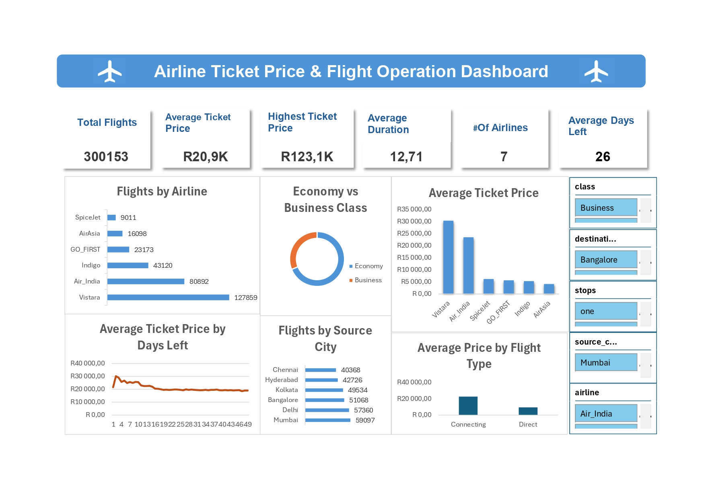

Case Study
Airline Ticket Price Analysis Dashboard
An interactive Microsoft Excel dashboard analysing airline ticket pricing, flight operations and travel behaviour using more than 300,000 flight records.

Project Overview
This project explores airline ticket pricing and flight operations using Microsoft Excel. The objective was to identify pricing patterns, travel behaviour and operational trends through data cleaning, PivotTables, PivotCharts, slicers and KPI reporting.
Dataset
- 300,153 flight records
- 12 variables
- Airlines
- Source & Destination Cities
- Flight Duration
- Travel Class
- Ticket Prices
Tools Used
- Microsoft Excel
- PivotTables
- PivotCharts
- Slicers
- Dashboard Design
- KPI Reporting
Business Questions
- Which airline operates the most flights?
- Which airline has the highest average ticket price?
- Which source city records the most departures?
- Does booking earlier reduce ticket prices?
- Are direct flights more expensive than connecting flights?
Key Insights
- Vistara operates the highest number of flights.
- Business Class tickets have significantly higher average prices.
- Mumbai records the highest number of departures.
- Ticket prices generally decrease when bookings are made further in advance.
Skills Demonstrated
Data Cleaning
Excel
PivotTables
PivotCharts
Dashboard Design
Business Analysis
Data Visualization
KPI Reporting